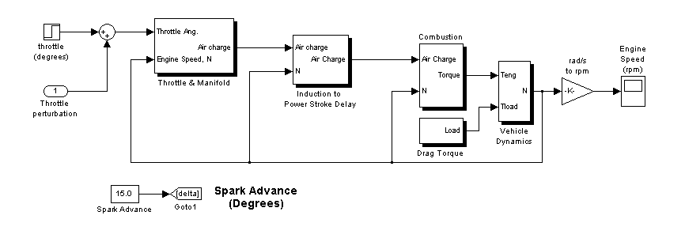
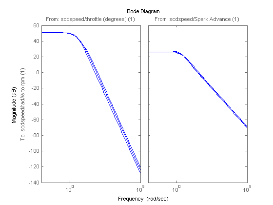

Engine Speed Model Demo
This demonstration introduces the linearization of an engine speed model.
The model can be opened using the command:
scdspeed
This example generates linear models of the output engine speed and between the inputs the Spark Advance and the Throttle Angle. The FINDOP command computes the operating points at steady state conditions at 2000, 3000, and 4000 RPM.
Create an operating point specification object using the command
opspec = operspec('scdspeed')
Operating Specificaton for the Model scdspeed.
(Time-Varying Components Evaluated at time t=0)
States:
----------
(1.) scdspeed/Throttle & Manifold/Intake Manifold/p0 = 0.543 bar
spec: dx = 0, initial guess: 0.543
(2.) scdspeed/Vehicle Dynamics/w = T//J w0 = 209 rad//s
spec: dx = 0, initial guess: 209
Inputs:
-----------
(1.) scdspeed/Throttle perturbation
initial guess: 0
Outputs: None
Next, specify the desired operating conditions. Fix the first output port of the Vehicle Dynamics to be 600, 700, and 800 RPM. Use the command ADDOUTPUTSPEC to do this.
opspec = addoutputspec(opspec,'scdspeed/rad//s to rpm',1);
Set the first operating specification
opspec.Output.Known = 1; opspec.Outputs.y = 2000;
Search for the operating point that meets this specification
op(1) = findop('scdspeed',opspec);
Operating Point Search Report:
---------------------------------
Operating Point Search Report for the Model scdspeed.
(Time-Varying Components Evaluated at time t=0)
Operating point specifications were successully met.
States:
----------
(1.) scdspeed/Throttle & Manifold/Intake Manifold/p0 = 0.543 bar
x: 0.544 dx: 9.4e-014 (0)
(2.) scdspeed/Vehicle Dynamics/w = T//J w0 = 209 rad//s
x: 209 dx: -8.48e-012 (0)
Inputs:
-----------
(1.) scdspeed/Throttle perturbation
u: 0.00382 [-Inf Inf]
Outputs:
-----------
(1.) scdspeed/rad//s to rpm
y: 2e+003 (2e+003)
Now, search for the remaining operating points at 3000 and 4000 RPM
opspec.Outputs.y = 3000; op(2) = findop('scdspeed',opspec); opspec.Outputs.y = 4000; op(3) = findop('scdspeed',opspec);
Operating Point Search Report:
---------------------------------
Operating Point Search Report for the Model scdspeed.
(Time-Varying Components Evaluated at time t=0)
Operating point specifications were successully met.
States:
----------
(1.) scdspeed/Throttle & Manifold/Intake Manifold/p0 = 0.543 bar
x: 0.49 dx: 6.61e-015 (0)
(2.) scdspeed/Vehicle Dynamics/w = T//J w0 = 209 rad//s
x: 314 dx: 4.57e-013 (0)
Inputs:
-----------
(1.) scdspeed/Throttle perturbation
u: 2.94 [-Inf Inf]
Outputs:
-----------
(1.) scdspeed/rad//s to rpm
y: 3e+003 (3e+003)
Operating Point Search Report:
---------------------------------
Operating Point Search Report for the Model scdspeed.
(Time-Varying Components Evaluated at time t=0)
Operating point specifications were successully met.
States:
----------
(1.) scdspeed/Throttle & Manifold/Intake Manifold/p0 = 0.543 bar
x: 0.473 dx: 1.09e-011 (0)
(2.) scdspeed/Vehicle Dynamics/w = T//J w0 = 209 rad//s
x: 419 dx: -1.49e-010 (0)
Inputs:
-----------
(1.) scdspeed/Throttle perturbation
u: 5.83 [-Inf Inf]
Outputs:
-----------
(1.) scdspeed/rad//s to rpm
y: 4e+003 (4e+003)
The operating points are now ready for linearization. First specify the input and output points using the commands:
io(1) = linio('scdspeed/throttle (degrees)',1,'in'); io(2) = linio('scdspeed/Spark Advance',1,'in'); io(3) = linio('scdspeed/rad//s to rpm',1,'out');
Linearize the model and plot the Bode magnitude response for each condition.
sys = linearize('scdspeed',op,io);
bodemag(sys)
